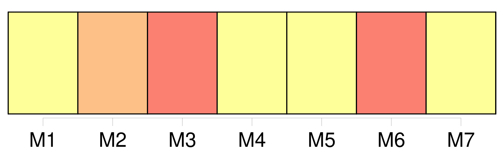
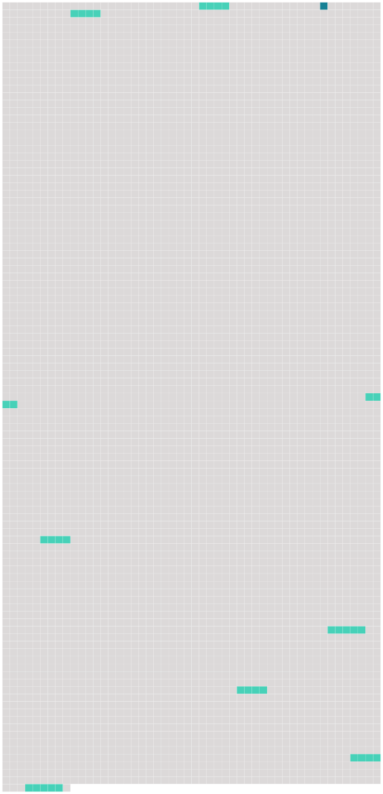

Longueur nb maillons : 9 mentions |
 |
Lorsqu'une pollution provenant d'une partie contractante est susceptible de porter atteinte aux intérêts d'une ou plusieurs autres parties contractantes à la convention, [les parties contractantes concernées] entrent en consultation, à la demande de l'une d'entre [elles] , en vue de négocier un accord de coopération. [1 phrases]
À la demande d' [une partie contractante concernée] , la Commission examine la question et peut faire des recommandations en vue de parvenir à une solution satisfaisante. [86 phrases]
Ces autorisations ou réglementations mettent en œuvre, notamment, les décisions pertinentes de la Commission qui lient [la partie contractante concernée] [20 phrases]
Article 5 [14 phrases]
Toute partie contractante dont les autorités reçoivent un tel rapport informe en conséquence, si elle le juge approprié, [toute autre partie contractante concernée] [18 phrases] Aucune installation offshore désaffectée ou aucun pipeline offshore désaffecté n'est immergé et aucune installation offshore désaffectée n'est laissée en place en totalité ou en partie dans la zone maritime sans un permis émanant cas par cas à cet effet de l'autorité compétente de [la partie contractante concernée] [11 phrases]
Article 8 [4 phrases]
Toute partie contractante dont les autorités reçoivent un tel rapport informe en conséquence, si elle le juge approprié, [toute autre partie contractante concernée] |
 |
Il est possible de télécharger la ressource sur la page Ortolang |
Si vous avez des questions ou vous voyez des erreurs, merci d'envoyer un mail à silvia.federzoni89@gmail.com |